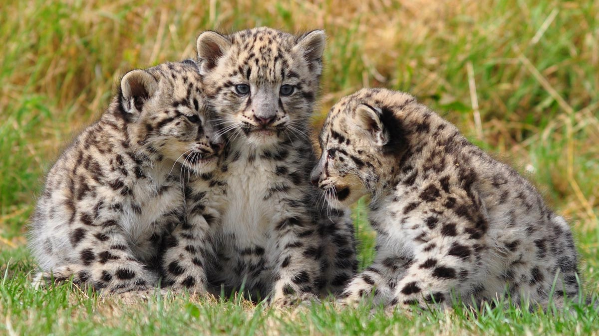

Leopards
Birth
Leopards do not have a defined birthing season and litters can arrive at any point during the year, although mating is more likely to occur during the months of January and February, meaning leopard litters typically arrive between April and May. The gestation period for leopards is between 90 and 112 days. Leopard litters typically contain two cubs, although litters can number up to six cubs.
Newborn Leopards
Newborn leopards are extremely vulnerable and rely entirely on mom for nourishment and protection. They are born blind, opening their eyes at around 10 days of age, and weigh only 1 pound. Mom carries the cubs to a new location every couple of days to ensure they are hidden from potential predators.
Physical Appearance
Leopards cubs aren’t born with their distinctive spots. They are born with a dull grey coat with barely visible spots that slowly develop as the leopards mature. Their eyes, as with all cats, are a pale blue color at birth and they gradually change to the piercing golden-green color that gives adults their intense stare.
Weaning
For the first three months of life, leopards consume nothing but mother’s milk. They typically wean around 3 months of age, after which time they share in the spoils of their mother’s kill.
Leaving the Den
Leopard cubs are relatively underdeveloped when born, due to the fairly short gestation period. They stay with mom for approximately two years, during which time they’ll learn to hunt. Only when they can hunt for themselves will they leave their mother’s side and live a solitary life.